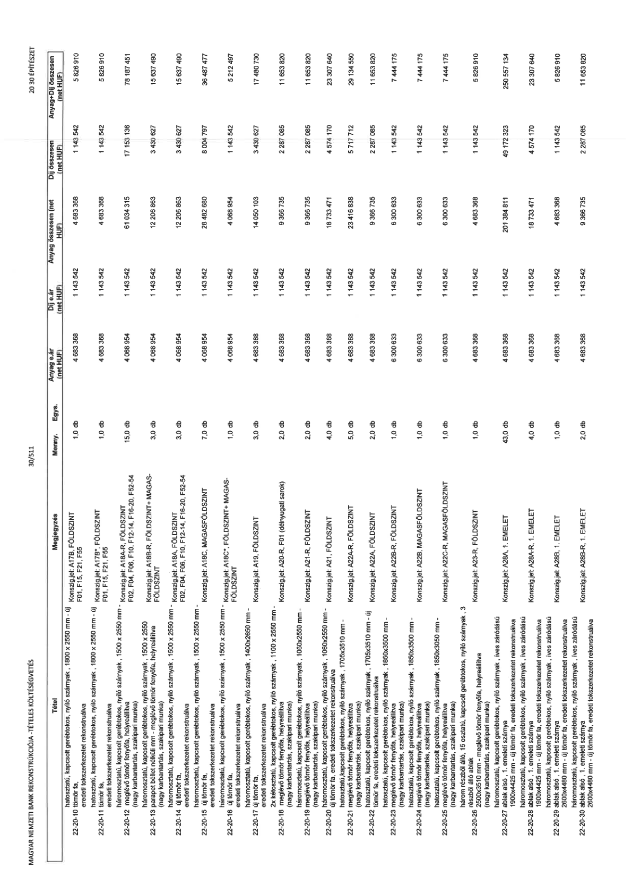

| Tétel | Megjegyzés | Menny. | Egys. | Anyag e.ár (net HUF) | Díj e.ár (net HUF) | Anyag összesen (net HUF) | Díj összesen (net HUF) | Anyag+Díj összesen (net HUF) |
|---|---|---|---|---|---|---|---|---|
| 22-20-10 hatosztatú, kapcsolt gerébtokos, 1800 x 2550 mm - új fémredőny, helyreállítva eredeti tokszerkezet rekonstruálva | Konszig.jel: A17B, FÖLDSZINT F01, F15, F21, F55 | 1,0 | db | 4 683 368 | 1 143 542 | 4 683 368 | 1 143 542 | 5 826 910 |
| 22-20-11 háromosztatú, kapcsolt gerébtokos, 1800 x 2550 mm - új fémredőny, helyreállítva eredeti tokszerkezet rekonstruálva | Konszig.jel: A17B*, FÖLDSZINT | 1,0 | db | 4 683 368 | 1 143 542 | 4 683 368 | 1 143 542 | 5 826 910 |
| 22-20-12 meglévő tömör fenyőfa, helyreállítva (nagy karbantartás, szakipari munka) | Konszig.jel: A18-R, FÖLDSZINT-MAGASFÖLDSZINT F02, F04, F06, F10, F12-14, F20, F52-54 | 15,0 | db | 4 068 954 | 1 143 542 | 61 034 315 | 17 153 136 | 78 187 451 |
| 22-20-13 parapet béllet nélküli imn - meglévő tömör fenyőfa, helyreállítva (nagy karbantartás, szakipari munka) | Konszig.jel: A18S-R, FÖLDSZINT + MAGASFÖLDSZINT | 3,0 | db | 4 068 954 | 1 143 542 | 12 206 863 | 3 430 627 | 15 637 490 |
| 22-20-14 háromosztatú, kapcsolt gerébtokos, nyíló szárnyak, 1500 x 2550 mm - eredeti tokszerkezet rekonstruálva | Konszig.jel: A18C, MAGASFÖLDSZINT F02, F04, F06, F10, F12-14, F20, F52-54 | 3,0 | db | 4 068 954 | 1 143 542 | 12 206 863 | 3 430 627 | 15 637 490 |
| 22-20-15 háromosztatú, kapcsolt gerébtokos, nyíló szárnyak, 1500 x 2550 mm - új tömör fa, eredeti tokszerkezet rekonstruálva | Konszig.jel: A18C, MAGASFÖLDSZINT | 7,0 | db | 4 068 954 | 1 143 542 | 28 482 680 | 8 004 797 | 36 487 477 |
| 22-20-16 új tömör fa, eredeti tokszerkezet rekonstruálva | Konszig.jel: A18C*, FÖLDSZINT + MAGASFÖLDSZINT | 1,0 | db | 4 068 954 | 1 143 542 | 4 068 954 | 1 143 542 | 5 212 497 |
| 22-20-17 2x kétosztatú, kapcsolt gerébtokos, nyíló szárnyak, 1100 x 2550 mm - meglévő tömör fenyőfa, helyreállítva (nagy karbantartás, szakipari munka) | Konszig.jel: A19, FÖLDSZINT | 3,0 | db | 4 683 368 | 1 143 542 | 14 050 103 | 3 430 627 | 17 480 730 |
| 22-20-18 meglévő tömör fenyőfa, helyreállítva (nagy karbantartás, szakipari munka) | Konszig.jel: A20-R, F01 (délnyugati sarok) | 2,0 | db | 4 683 368 | 1 143 542 | 9 366 735 | 2 287 085 | 11 653 820 |
| 22-20-19 meglévő tömör fenyőfa, helyreállítva (nagy karbantartás, szakipari munka) | Konszig.jel: A21, FÖLDSZINT | 2,0 | db | 4 683 368 | 1 143 542 | 9 366 735 | 2 287 085 | 11 653 820 |
| 22-20-20 meglévő tömör fenyőfa, helyreállítva (nagy karbantartás, szakipari munka) | Konszig.jel: A21-R, FÖLDSZINT | 4,0 | db | 4 683 368 | 1 143 542 | 18 733 471 | 4 574 170 | 23 307 640 |
| 22-20-21 meglévő tömör fenyőfa, helyreállítva (nagy karbantartás, szakipari munka) | Konszig.jel: A22A-R, FÖLDSZINT | 5,0 | db | 4 683 368 | 1 143 542 | 23 416 838 | 5 717 712 | 29 134 550 |
| 22-20-22 hatosztatú, kapcsolt gerébtokos, nyíló szárnyak, 1850x3500 mm - meglévő tömör fenyőfa, helyreállítva (nagy karbantartás, szakipari munka) | Konszig.jel: A22A, FÖLDSZINT | 2,0 | db | 4 683 368 | 1 143 542 | 9 366 735 | 2 287 085 | 11 653 820 |
| 22-20-23 hatosztatú, kapcsolt gerébtokos, nyíló szárnyak, 1850x3500 mm - meglévő tömör fenyőfa, helyreállítva (nagy karbantartás, szakipari munka) | Konszig.jel: A22B-R, FÖLDSZINT | 1,0 | db | 6 300 633 | 1 143 542 | 6 300 633 | 1 143 542 | 7 444 175 |
| 22-20-24 meglévő tömör fenyőfa, helyreállítva (nagy karbantartás, szakipari munka) | Konszig.jel: A22B, MAGASFÖLDSZINT | 1,0 | db | 6 300 633 | 1 143 542 | 6 300 633 | 1 143 542 | 7 444 175 |
| 22-20-25 hatosztatú, kapcsolt gerébtokos, nyíló szárnyak, 1850x3500 mm - három részből álló, 15 osztatú, kapcsolt gerébtokos, nyíló szárnyak, 3 részből álló ablak | Konszig.jel: A22C-R, MAGASFÖLDSZINT | 1,0 | db | 6 300 633 | 1 143 542 | 6 300 633 | 1 143 542 | 7 444 175 |
| 22-20-26 2500x3510 mm - meglévő tömör fenyőfa, helyreállítva (nagy karbantartás, szakipari munka) | Konszig.jel: A23-R, FÖLDSZINT | 1,0 | db | 4 683 368 | 1 143 542 | 4 683 368 | 1 143 542 | 5 826 910 |
| 22-20-27 hatosztatú, kapcsolt gerébtokos, nyíló szárnyak, íves záródású három részből álló, 1. emeleti szárnya | Konszig.jel: A28A, 1. EMELET | 43,0 | db | 4 683 368 | 1 143 542 | 201 384 811 | 49 172 323 | 250 557 134 |
| 22-20-28 1900x4425 mm - új tömör fa, eredeti tokszerkezet rekonstruálva háromosztatú, kapcsolt gerébtokos, nyíló szárnyak, íves záródású | Konszig.jel: A28A-R, 1. EMELET | 4,0 | db | 4 683 368 | 1 143 542 | 18 733 471 | 4 574 170 | 23 307 640 |
| 22-20-29 1900x4425 mm - új tömör fa, eredeti tokszerkezet rekonstruálva háromosztatú, kapcsolt gerébtokos, nyíló szárnyak, íves záródású | Konszig.jel: A28B, 1. EMELET | 1,0 | db | 4 683 368 | 1 143 542 | 4 683 368 | 1 143 542 | 5 826 910 |
| 22-20-30 ablak alsó, 1. emeleti szárnya 2600x4480 mm - új tömör fa, eredeti tokszerkezet rekonstruálva | Konszig.jel: A28B-R, 1. EMELET | 2,0 | db | 4 683 368 | 1 143 542 | 9 366 735 | 2 287 085 | 11 653 820 |
